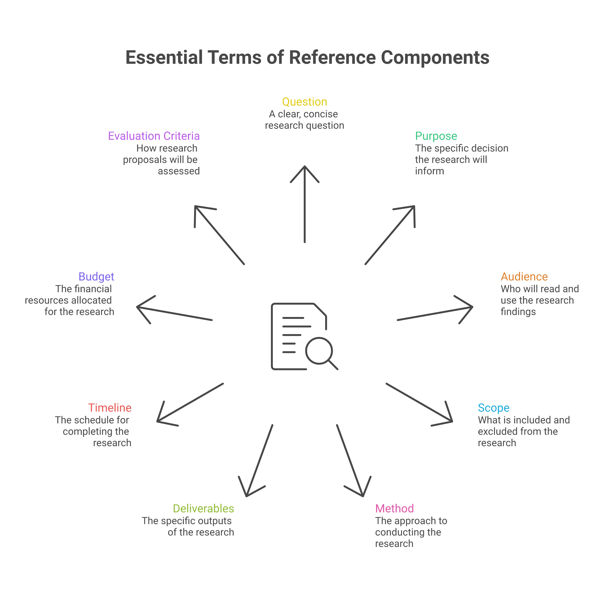
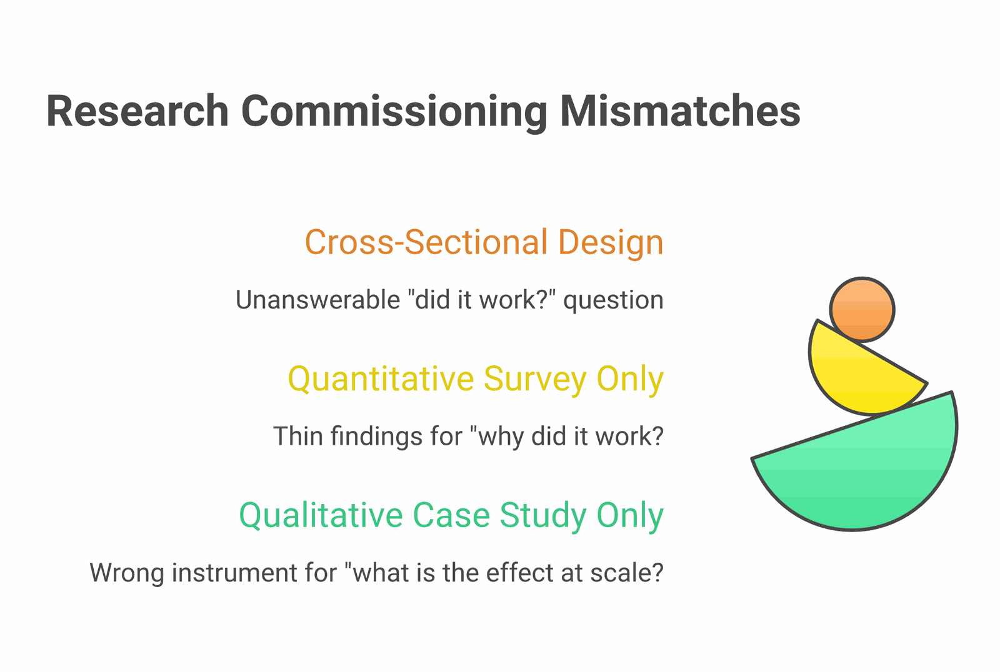
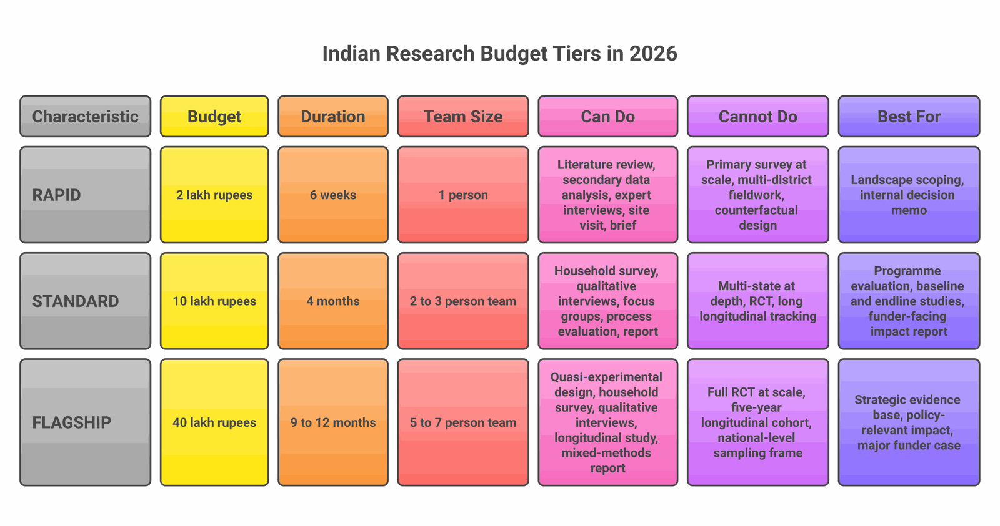
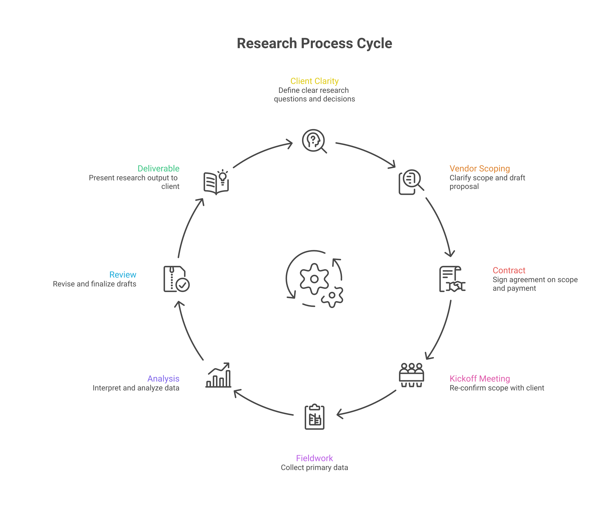

If we had to name the single biggest reason research engagements go wrong, it would not be methodological. It would not be capacity. It would not even be budget. It would be that the scope of work was unclear from day one, and that the gap between what the client thought they were asking for and what the agency thought they had agreed to do only became visible at week six, when the first draft did not satisfy either side.
We see this from both sides. As clients commissioning research, we have written ToRs we now wince at. As an agency receiving them, we read perhaps a hundred ToRs a year — from NGOs, foundations, governments, intermediaries — and we can usually predict, in the first ten minutes of reading, whether the engagement will produce useful research or produce a relationship-ending disappointment. The signal is almost never the budget. It is the clarity. The big commissioning bodies say the same thing in more formal language: USAID's How-To Note on Evaluation Statements of Work puts it plainly — "the more detailed and accurate the SOW the more likely that the evaluation will generate useful and high quality findings, conclusions, and recommendations" — and the World Bank's Independent Evaluation Group calls a well-specified ToR "a critical step in managing a high-quality evaluation."
This post is an attempt to make the elements of clarity explicit. It is written for the development sector practitioner who has been told "draft a ToR for the X study" and is not sure where to start, and for the foundation programme officer who needs to commission a piece of work and does not want to waste either party's time. It also includes the part everyone needs and almost no one talks about: how to cost a study honestly in India, and what a given budget can — and cannot — actually buy.
The Anatomy of a Good ToR
A good Terms of Reference (call it ToR, SoW, RFP, or "the brief" — the language varies, the substance does not) does seven things at minimum. Most weak ToRs do three or four; almost none do all seven well. The diagram below is the working checklist we use ourselves — it overlaps heavily with the elements BetterEvaluation and the World Bank's IEG how-to guide recommend, which describe the ToR as "the basis for a contractual arrangement between the commissioners of an evaluation and a consultant/evaluation team."

1. The question — written as one sentence
If you cannot write the central research question as one sentence, the study is not yet ready to commission. This is the single most common diagnostic of trouble — and it echoes a much older lesson from research design, where frameworks like FINER (feasible, interesting, novel, ethical, relevant) exist precisely because a vague or unanswerable question is the root failure that no amount of method can fix. "We want to understand the entire ecosystem of women's livelihoods in Bundelkhand" is not a question. "What share of women in our 30-village sample have transitioned out of agriculture into non-farm work since 2018, and what predicts that transition?" is a question. The first will produce a 200-page report you will not read. The second will produce a 30-page report you will use to design your next programme.
2. The purpose — the decision it will inform
State what you will do with the findings, in plain language. "We will use this to decide whether to expand the NRLM-linked livestock programme to three new districts in 2027" is the kind of sentence that anchors everything. Compare it with "to learn more about" or "to inform our strategy" — both of which mean nothing operationally. A study without a decision attached to it is a study that will land on the strategy team's desk, get circulated, get not-read, and become invisible in six weeks. Studies tied to a decision get used.
3. The audience — who actually reads the output
The CEO who needs a one-page memo. The programme team that needs a 40-page report with specific recommendations. The funder who needs a 12-slide deck. The academic community for whom a working paper makes sense. The community partners who need a 4-page Hindi-language back-brief. It is almost always more than one, and the different audiences usually need different artefacts. Saying so explicitly in the ToR is what gets you a deliverables set that works for all of them, rather than one document that satisfies none.
4. The scope — including what is not in the study
The hardest discipline. The temptation is always to expand: "and we should probably also look at…", "while you're in the field could you also…". Resist this in writing the ToR. Be explicit about what is out of scope. "This study does not include cost-benefit analysis", "we are not measuring health outcomes in this round", "the comparison with the Bihar programme is for a later phase." Boundaries protect both parties. Without them, scope creep is guaranteed and the budget will be unrealistic from the start.
5. Method — preferred, or method-agnostic
Two valid approaches. Either: "We need a mixed-methods design with at least 600 household surveys and 30 in-depth interviews across three districts" — clear, specific, costable. Or: "We are method-agnostic; please propose the design that best answers the question within the budget." Both work. What does not work is the middle ground: "Use rigorous methods including but not limited to qualitative and quantitative approaches as appropriate." That sentence means nothing. It will produce a proposal that hedges, an engagement that drifts, and a final report that everyone is mildly unhappy with.
6. Deliverables — be physical and specific
"A comprehensive report" is not a deliverable. "A 30–40 page report in English (PDF + Word source), plus a 12-slide PowerPoint deck, plus a 4-page hindi back-brief for community partners, plus the cleaned dataset and the analysis code" is a deliverable specification. State the language. State the format. State the length range. State who owns the data and code afterwards. State how many rounds of revision are expected. State who signs off.
7. Timeline — with the real reason behind it
"By August 15" is a date. "By August 15, because that is when our board meets to decide the FY2027 strategy and findings need to land in board papers two weeks prior" is a date with a reason. The reason matters because it tells the agency what flexibility exists. If a draft on August 15 is acceptable as long as the final is October 1, that is very different from August 15 being the absolute final. Real reasons let real conversations happen about phasing.
8. Budget — transparent, in a range
The biggest single thing that wastes time in research commissioning is hiding the budget. The reason it gets hidden is the worry that "if we tell them the budget, they'll quote us up to it." This is a real risk, but a smaller one than the cost of not stating a range. Without a budget signal, the agency designs in the dark. They either over-design (and you reject the proposal as too expensive) or under-design (and you accept a proposal that promises what cannot be delivered). Stating "₹8–12 lakh" upfront produces proposals you can actually evaluate against each other. It also reflects a basic quality principle: the OECD-DAC Quality Standards for Development Evaluation expect an evaluation to be planned with adequate resources and carried out "within budget and the allotted time" — which is only possible if the budget envelope is on the table before design begins. We discuss what each tier buys you in detail below.
9. Evaluation criteria — written down
"We will evaluate proposals on quality of approach (40%), team experience (30%), proposed cost (20%), and ImpactMojo / community linkages (10%)" is the sort of statement that produces proposals you can compare. Spelling out the resources, roles and selection basis in the ToR is precisely what BetterEvaluation describes as the document that "establishes the parameters against which the success of an evaluation assignment can be assessed." Without it, agencies will privately conclude that the decision is being made on relationships, on lowest price, or on whatever is in the commissioner's head — and proposals will calibrate to those (worse) signals.
Five Anti-Patterns We See Every Week
Most weak ToRs are not weak because the commissioner is lazy. They are weak because they fall into one of a small number of recognisable patterns. Naming the patterns helps.
"A comprehensive study of X"
The word "comprehensive" is a tell. It means the commissioner has not yet narrowed the question. Comprehensive studies, in practice, are surveys-of-surveys that produce 200-page documents nobody reads. If you find the word "comprehensive" in your draft ToR, replace it with "focused" and ask what the focus is.
Method-shopping
"We are open to RCT, quasi-experimental, mixed-methods, or qualitative approaches." This sounds open-minded. It actually signals that the commissioner does not yet know what question they are answering, because the question dictates the method. Stay method-agnostic explicitly if the question is right and the method should follow it — but do not present method-flexibility as a virtue when it is in fact uncertainty.
"And also could you…"
A ToR that started as a baseline survey, has now added a process evaluation, two case studies, a literature review, and a cost-benefit analysis — but the budget has not moved. Each addition halves the depth of every component. Better discipline: pick the most important one, do it well, save the rest for round two.
Confusing research with consulting
"Conduct a study and provide strategic recommendations on how we should restructure our programme." This is two engagements: a research study, and a consulting engagement. They have different methods, different teams, and different cost structures. Asking for both within one budget produces a study with weak research and weak recommendations. Separate them — or pick one.
The hidden 80%
A ToR that mentions a survey, but not that the survey must be conducted in five tribal languages, in monsoon season, in conflict-affected districts, with women-only enumerators, with consent processes that involve the gram sabha. Each of these is a 20–40% budget multiplier; together they make the difference between a doable study and an undoable one. Surface all of them in the ToR, not after contract signing.
A Question Worth Sitting With
Before you send a draft ToR out, ask yourself: if the agency reads only the first page, will they understand what we want? If not, rewrite the first page until they would.
What Kind of Research Do You Actually Need?
The second-most-common reason research engagements go wrong is not unclear scope — it is asking for the wrong type of research for the question. The commissioning literature makes the same point: 3ie, which funds rigorous impact evaluations across low- and middle-income countries, stresses that the design should follow from the question and use the most appropriate mix of methods to answer what works, for whom, why and at what cost. A ToR that requests an outcome evaluation when what the client actually needs is process tracing produces a methodologically clean study that does not inform the decision. A quantitative survey commissioned to answer a question about mechanism produces large tables that nobody can act on. A single cross-sectional study commissioned to demonstrate "change over time" produces conclusions that no honest evaluator can defend.
Before you write the methods section of a ToR, walk explicitly through three dimensions. Each has predictable mismatches. (If the work is an evaluation rather than open-ended research, it is also worth deciding upfront which of the OECD-DAC evaluation criteria — relevance, coherence, effectiveness, efficiency, impact, sustainability — you actually need answered; commissioning against all six by default is one of the quieter ways a ToR balloons.)

Dimension 1 — What question are you really asking?
Outcome evaluation answers "did it work" and "how much effect did it have." It needs a credible comparison — a counterfactual that tells you what would have happened without the intervention. It produces effect sizes, statistical significance, and (with enough rigour) causal claims. As BetterEvaluation notes, the more useful version of the question is not just "what works" but "what works, for whom, in what ways, and under what circumstances." Use it when the decision in front of you is "should we scale this, continue this, or stop this," and when you have a comparison group available — or can construct one through randomisation, matching, or natural experiment.
Process tracing answers "why did it happen" and "what was the mechanism." As Beach and Pedersen describe it, it is a method for studying the causal mechanisms that link a cause to an outcome, using detailed, time-ordered evidence about how an intervention unfolded. It produces causal narratives, mechanism descriptions, and identification of what worked, for whom, when, and why. Use it when the decision is "how should we redesign this," when the intervention is novel, or when the outcome evaluation is producing puzzling results you need to explain.
Theory-based evaluation combines both, structured around a theory of change. It tests the causal links inside the theory — both whether the outcomes materialised and whether the intermediate mechanisms operated as predicted. (The classic pitfall, BetterEvaluation warns, is a "theory" of change that is really just boxes and arrows with no actual theory of how change comes about.) The most demanding design and the most informative one. Used by serious large-funder evaluations (USAID, FCDO, Gates Foundation flagship programmes); under-used in mid-tier Indian NGO commissioning, where it would often be the better fit.
The most common mismatch on this dimension: a client wants to know "why our programme works" (a process / mechanism question) but writes a ToR for an outcome evaluation with statistical estimates. The resulting study produces an effect size and tells them almost nothing about why. Or the reverse: a client needs to demonstrate impact to a funder (outcome question) but commissions a thick qualitative case study. The funder rejects the case study as anecdotal.
Dimension 2 — What kind of evidence will be persuasive?
Quantitative evidence is persuasive when the audience wants representativeness, generalisation, or specific magnitudes. It requires a sufficient sample size, valid measurement instruments, and the ability to translate fuzzy concepts (well-being, agency, empowerment) into measurable variables — which is harder than it sounds. Use when the audience is a funder, board, government counterpart, or any reader who needs to be persuaded that the finding generalises beyond the cases studied.
Qualitative evidence is persuasive when the audience wants depth, mechanism, lived experience, or context. It requires careful case selection (typological, extreme-case, deviant, paradigmatic — there is a craft to this), skilled interviewing, and disciplined analysis. Use when the audience is a programme team, the community partners, or any reader who needs to understand how rather than how much.
Mixed-methods combines both — and is the most common choice in modern development research because most real questions need both kinds of evidence. But the strength of a mixed-methods study lies in the integration: methodologists are explicit that a genuine mixed-methods design must be built to take advantage of the complementarities between the two strands, not simply run them side by side. The under-discussed problem is that mixed-methods is regularly under-budgeted: clients pay for the quant component and the qual component but not for the genuine integration work (where the two strands inform each other, contradict each other, and produce findings neither alone could). Without budget for integration, mixed-methods produces two parallel studies, not one integrated study.
Common mismatch: commissioning a quantitative-only study to answer a question about lived experience, mechanism, or meaning. The numbers will not answer it. Reverse mismatch: commissioning a qualitative-only study to demonstrate effect at scale. The cases will not persuade a sceptical funder.
Dimension 3 — Snapshot or change over time?
Cross-sectional studies capture one point in time. They describe "what is now." They are cheaper, faster, and operationally simpler. They are not capable of supporting claims about change unless paired with credible historical baseline data (which usually does not exist).
Pre-post designs measure outcomes before and after an intervention. They are the minimum credible "change" design. The honest interpretation requires either a comparison group (to control for what would have happened anyway) or strong theoretical justification that the change is attributable to the intervention rather than to other factors changing simultaneously.
Longitudinal designs track the same units across multiple rounds. They are the strongest design for causality and developmental questions. They are expensive, operationally demanding (attrition is the killer), and require sustained client commitment that often does not survive funding cycles. India's strongest longitudinal datasets — the India Human Development Survey (a nationally representative panel of over 40,000 households re-interviewed across rounds), the long-running Young Lives cohort study of childhood poverty (which has followed the same children in India and three other countries since 2002), and the panel datasets behind major field-experiment programmes — exist because someone invested in multi-year, sometimes multi-decade horizons.
Retrospective designs rely on participant recall to reconstruct a baseline. They are cheaper than true longitudinal designs and weaker on every dimension that matters. Use only when no baseline data was collected and you have no alternative — and always discount the findings accordingly.
The most common mismatch here is the most damaging: a client commissions a cross-sectional study, and then writes about "change" in the report. There was no baseline. The "change" is a comparison between the present and a half-remembered past, or between the treated and untreated groups (which were not equivalent at baseline). The findings are not defensible. They get used anyway, and they do not survive any rigorous scrutiny.
Before you finalise the methods section
State your answer on each of the three dimensions explicitly in the ToR. "This is an outcome evaluation (Dimension 1), mixed-methods with quant primary (Dimension 2), quasi-experimental pre-post with matched comparison schools (Dimension 3)." If you cannot fill in those three slots, you do not yet know what research you are commissioning — and the agency cannot help you until you do.
If you would rather build this interactively, our ToR Builder Pro walks you through these three dimensions, suggests methods to match, and exports a finished ToR plus a costing sheet — the working version of everything in this guide.
What ₹2L, ₹10L, ₹40L Actually Buy You (India, 2026)
The most underdiscussed part of research commissioning in India is honest costing. In our experience most commissioners under-budget — often by something like a third to a half — because they have no internal baseline for what specific components cost; closing the gap between an under-resourced ToR and a study that can actually deliver is exactly what the USAID and World Bank guidance above is for. Here is the working baseline we use. These figures are our own indicative practitioner estimates — not published market data — reflecting 2026 mid-range rates we see for credible research agencies and independent senior researchers in India; informal-sector rates are lower but variable, and top-tier international consulting firms are 3–5× higher. Treat them as a starting point for your own costing, not a quoted benchmark.

Where the money actually goes
Inside any ₹10L study, the rough breakdown is:
| Cost line | % of total | What it covers |
|---|---|---|
| Research team (senior + mid) | 35–45% | Design, analysis, writing — 1 senior @ ₹15–25K/day, 1–2 mid @ ₹8–12K/day |
| Field team & data collection | 20–30% | Enumerators (₹800–1,500/day), supervisors, training, piloting, transit, per diems |
| Transcription & data cleaning | 5–8% | Often outsourced; ₹40–80 per minute of audio for Indian languages |
| Project management overhead | 10–15% | Coordination, client communication, ethics review, contracting — usually invisible |
| Travel & logistics | 5–10% | Flights, hotels, vehicles, local logistics |
| Tools, software, design | 2–5% | Survey platform, analysis software, report design, translations |
| Contingency | 5–10% | Field delays, monsoon, ethics re-submission, additional revision rounds |
Indicative 2026 day rates (our own estimates) for credible Indian research agencies and independent researchers:
- Junior researcher (MA, 1–3 years experience): ₹4,000–6,000 per day
- Mid-career researcher (MA + 4–8 years, or PhD + 1–3 years): ₹8,000–14,000 per day
- Senior researcher (PhD + 8+ years, or recognised expert): ₹15,000–30,000 per day
- Principal investigator (sector-recognised, named on grant): ₹25,000–60,000 per day
- Field enumerator (qualified, trained): ₹800–1,500 per day plus per diem
- Field supervisor: ₹1,800–3,000 per day plus per diem
- Transcription (audio → text, Indian language): ₹40–80 per minute of audio
- Translation (Hindi/regional → English, professional): ₹1.50–3.00 per source word
Multiply these rates against the time the work genuinely takes — including the parts that are easy to under-budget: design (a senior researcher's 5–10 days), analysis (a senior plus mid, 15–25 days), writing and revision (10–20 days). A "small" mixed-methods study honestly costed is rarely under ₹6–8 lakh; many quotes lower than that are either being subsidised by the agency, are cutting corners that will hurt the engagement, or are being quoted by less-experienced teams.
Common Budgeting Mistakes
Five mistakes that quietly hurt the engagement
1. Under-budgeting analysis time. Commissioners routinely budget 30% for fieldwork and 10% for analysis. It should be closer to 25% for fieldwork and 25% for analysis. Most of what makes a research output useful happens in analysis, not in data collection. Cutting analysis is cutting the thing you actually paid for.
2. No contingency. Indian fieldwork includes monsoon, festivals, elections, school holidays, ethics committee delays, missing officials, and one unexpected death-or-illness in every team of 10 across 6 months. Budget 8–10% contingency. Without it, every overrun becomes a payment dispute.
3. Skipping PM overhead. A good research agency spends 10–15% of any project on project management — coordination, client check-ins, internal QC, ethics filings, sub-contracts. Commissioners who object to this line item are asking the agency to do the work for free; what they get instead is poorly-coordinated work.
4. Splitting payment unhelpfully. "10% on signing, 90% on final report acceptance" sounds prudent. It actually forces the agency to finance the entire study from its own working capital for 6–9 months, which most agencies cannot do without raising their rate substantially. A workable cadence: 25% mobilisation, 25% midline (after baseline data collection), 30% on first draft, 20% on final acceptance.
5. Asking for unpaid revisions. Two rounds of revision is standard. A third round is usually grounds for additional payment. Commissioners who want unlimited revisions are buying a different (more expensive) product and should either pay for it or accept defined limits.
The Pipeline From ToR to Useful Research
Everything above is in service of a process that, when it works, looks roughly like this:

The kickoff conversation that saves the engagement
One specific practice we recommend to every client: budget for a 90-minute kickoff meeting in the first week of the contract, with the full research team plus the client team, where the agency walks back through their understanding of every element of the ToR. Question. Purpose. Audience. Scope boundaries. Method. Deliverables. Timeline. Budget assumptions. Evaluation criteria.
This sounds redundant. It is not. Eight out of ten times, the kickoff surfaces at least one substantive misalignment — usually about scope ("oh, we assumed the regional offices would not be in the sample"), or about audience ("we did not realise the funder also needed to sign off"), or about the deliverable format. Catching this in week one costs nothing. Catching it in week sixteen costs the engagement.
A Working Checklist
If you remember nothing else from this post, remember this: before sending a ToR out, walk through these questions. Most ToRs that pass this checklist produce engagements that work; most that fail it produce engagements that struggle.
The Pre-Send ToR Checklist
Read your draft. For each question, write the answer in the margin.
- Question. Can you state the central research question in one sentence?
- Purpose. Have you named the specific decision the findings will inform, with a date?
- Audience. Have you listed each audience for the output and what format they need?
- Scope IN. Have you specified what is in scope — including geography, population, time period, comparison group?
- Scope OUT. Have you written down at least three things that are explicitly not in scope?
- Method. Have you stated whether you have a method preference or are method-agnostic? (Both fine — being unclear is not.)
- Deliverables. Have you specified each deliverable's format, length range, language, and ownership?
- Timeline. Have you given hard dates and tied them to the real reason behind each one?
- Budget. Have you stated a budget range, not just "competitive proposals"?
- Criteria. Have you written down the proposal evaluation weights?
- Hidden 80%. Have you surfaced every operational constraint — languages, seasons, safety, ethics, community consent processes?
- Payment schedule. Does your payment milestone proposal allow the agency to actually finance the work?
- Revisions. Have you specified how many rounds of revision are within scope?
- Contingency. Have you allowed 8–10% contingency in your budget?
- First-page test. Could an agency reader, after only the first page, accurately describe what you want?
One Final Suggestion
Send your draft ToR to one trusted person on the agency side of the field before sending it to formal procurement. Not to compete, not to bid — just to read. Ask them: "If you received this, would you understand what we want? Would you bid?" That single twenty-minute conversation is the most efficient time you will spend on the entire engagement.
The agencies on the other side of these documents are mostly trying to do good work. We see well-resourced commissioners produce bad ToRs all the time. We also see under-resourced commissioners produce excellent ToRs that result in research worth twice what they paid for it. The difference is almost never the budget. It is the clarity. Build that habit, and the work that follows almost takes care of itself.
If you'd like to commission research from ImpactMojo
We respond best to ToRs that look like the ones described above. Send drafts (even partial ones) to /contact and we'll either propose, refer you to a better-fitting agency, or — quite often — flag the questions that should be answered before the ToR is finalised. The last is free and usually the most valuable.